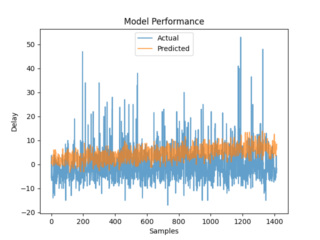

Business question
How accurately can a planner estimate the average departure delay for a given Atlanta route and schedule?
Approach
How the work was done
- Prepared 22,580 cleaned Atlanta flight records. The CSVs are committed directly; DVC pointers record checksums, with no remote configured.
- Compared Ridge regression settings across 20 alpha values; features include destination airport and scheduled departure and arrival times.
- Tracked experiments in MLflow and served predictions through FastAPI in Docker, with automated GitHub Actions and unit tests.
Results
What the analysis shows
- The selected Ridge alpha was 3.8; held-out test RMSE was 8.92 minutes and MSE was 79.65.
- The pipeline logs a mean predicted delay of 4.48 minutes. A fixed split seed and an explicit refit of the selected Ridge model support reproducibility.
- The API returns a route-and-schedule average, evaluated on later dates after grouping by destination and scheduled times. Individual flights and major disruptions can depart much later.
From the project
Where the delay estimates miss

Predicted and observed average delays
The held-out evaluation plot shows predictions concentrated near typical delays while observed averages have larger spikes. The horizontal axis lists evaluated samples. The held-out RMSE is 8.92 minutes.
Business relevance
What this makes easier to decide
This project demonstrates how a prediction can move through data preparation, experiment tracking, packaging, and an API interface. The reported test error helps set expectations for how precise a schedule estimate may be.